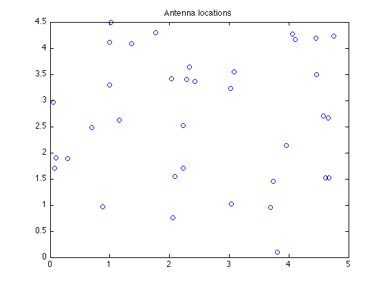
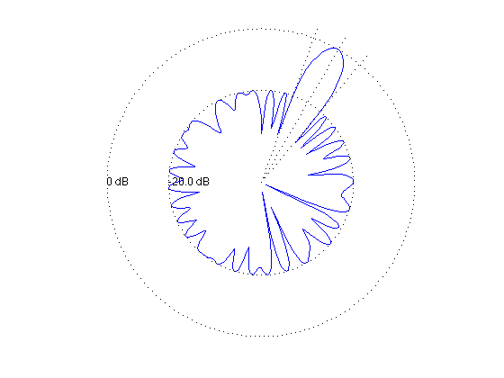
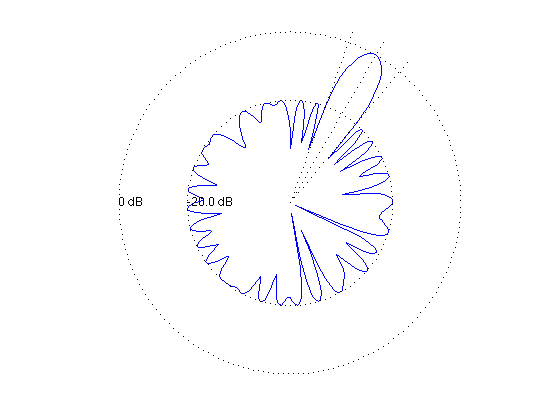
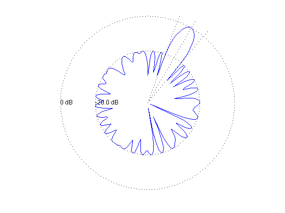

% "Convex optimization examples" lecture notes (EE364) by S. Boyd % "Antenna array pattern synthesis via convex optimization" % by H. Lebret and S. Boyd % (figures are generated) % % Designs an antenna array such that: % - it has unit a sensitivity at some target direction % - obeys constraint for minimum sidelobe level outside the beamwidth % - minimizes thermal noise power in y (sigma*||w||_2^2) % % This is a convex problem described as: % % minimize norm(w) % s.t. y(theta_tar) = 1 % |y(theta)| <= min_sidelobe for theta outside the beam % % where y is the antenna array gain pattern (complex function) and % variables are w (antenna array weights or shading coefficients). % Gain pattern is a linear function of w: y(theta) = w'*a(theta) % for some a(theta) describing antenna array configuration and specs. % % Written for CVX by Almir Mutapcic 02/02/06 % select array geometry ARRAY_GEOMETRY = '2D_RANDOM'; % ARRAY_GEOMETRY = '1D_UNIFORM_LINE'; % ARRAY_GEOMETRY = '2D_UNIFORM_LATTICE'; %******************************************************************** % problem specs %******************************************************************** lambda = 1; % wavelength theta_tar = 60; % target direction half_beamwidth = 10; % half beamwidth around the target direction min_sidelobe = -20; % maximum sidelobe level in dB %******************************************************************** % random array of n antenna elements %******************************************************************** if strcmp( ARRAY_GEOMETRY, '2D_RANDOM' ) % set random seed to repeat experiments rand('state',0); % (uniformly distributed on [0,L]-by-[0,L] square) n = 36; L = 5; loc = L*rand(n,2); %******************************************************************** % uniform 1D array with n elements with inter-element spacing d %******************************************************************** elseif strcmp( ARRAY_GEOMETRY, '1D_UNIFORM_LINE' ) % (unifrom array on a line) n = 30; d = 0.45*lambda; loc = [d*[0:n-1]' zeros(n,1)]; %******************************************************************** % uniform 2D array with m-by-m element with d spacing %******************************************************************** elseif strcmp( ARRAY_GEOMETRY, '2D_UNIFORM_LATTICE' ) m = 6; n = m^2; d = 0.45*lambda; loc = zeros(n,2); for x = 0:m-1 for y = 0:m-1 loc(m*y+x+1,:) = [x y]; end end loc = loc*d; else error('Undefined array geometry') end %******************************************************************** % construct optimization data %******************************************************************** % build matrix A that relates w and y(theta), ie, y = A*w theta = [1:360]'; A = kron(cos(pi*theta/180), loc(:,1)') + kron(sin(pi*theta/180), loc(:,2)'); A = exp(2*pi*i/lambda*A); % target constraint matrix [diff_closest, ind_closest] = min( abs(theta - theta_tar) ); Atar = A(ind_closest,:); % stopband constraint matrix ind = find(theta <= (theta_tar-half_beamwidth) | ... theta >= (theta_tar+half_beamwidth) ); As = A(ind,:); %******************************************************************** % optimization problem %******************************************************************** cvx_begin variable w(n) complex minimize( norm( w ) ) subject to Atar*w == 1; abs(As*w) <= 10^(min_sidelobe/20); cvx_end % check if problem was successfully solved disp(['Problem is ' cvx_status]) if ~strfind(cvx_status,'Solved') return end fprintf(1,'The minimum norm of w is %3.2f.\n\n',norm(w)); %******************************************************************** % plots %******************************************************************** figure(1), clf plot(loc(:,1),loc(:,2),'o') title('Antenna locations') % plot array pattern y = A*w; figure(2), clf ymin = -30; ymax = 0; plot([1:360], 20*log10(abs(y)), ... [theta_tar theta_tar],[ymin ymax],'r--',... [theta_tar+half_beamwidth theta_tar+half_beamwidth],[ymin ymax],'g--',... [theta_tar-half_beamwidth theta_tar-half_beamwidth],[ymin ymax],'g--',... [0 theta_tar-half_beamwidth],[min_sidelobe min_sidelobe],'r--',... [theta_tar+half_beamwidth 360],[min_sidelobe min_sidelobe],'r--'); xlabel('look angle'), ylabel('mag y(theta) in dB'); axis([0 360 ymin ymax]); % polar plot figure(3), clf zerodB = 50; dBY = 20*log10(abs(y)) + zerodB; plot(dBY.*cos(pi*theta/180), dBY.*sin(pi*theta/180), '-'); axis([-zerodB zerodB -zerodB zerodB]), axis('off'), axis('square') hold on plot(zerodB*cos(pi*theta/180),zerodB*sin(pi*theta/180),'k:') % 0 dB plot( (min_sidelobe + zerodB)*cos(pi*theta/180), ... (min_sidelobe + zerodB)*sin(pi*theta/180),'k:') % min level text(-zerodB,0,'0 dB') text(-(min_sidelobe + zerodB),0,sprintf('%0.1f dB',min_sidelobe)); theta_1 = theta_tar+half_beamwidth; theta_2 = theta_tar-half_beamwidth; plot([0 55*cos(theta_tar*pi/180)], [0 55*sin(theta_tar*pi/180)], 'k:') plot([0 55*cos(theta_1*pi/180)], [0 55*sin(theta_1*pi/180)], 'k:') plot([0 55*cos(theta_2*pi/180)], [0 55*sin(theta_2*pi/180)], 'k:') hold off
Calling sedumi: 1439 variables, 414 equality constraints For improved efficiency, sedumi is solving the dual problem. ------------------------------------------------------------ SeDuMi 1.21 by AdvOL, 2005-2008 and Jos F. Sturm, 1998-2003. Alg = 2: xz-corrector, Adaptive Step-Differentiation, theta = 0.250, beta = 0.500 Put 2 free variables in a quadratic cone eqs m = 414, order n = 1028, dim = 1441, blocks = 344 nnz(A) = 50003 + 0, nnz(ADA) = 54774, nnz(L) = 27594 it : b*y gap delta rate t/tP* t/tD* feas cg cg prec 0 : 2.69E+00 0.000 1 : 4.26E-01 2.44E+00 0.000 0.9087 0.9000 0.9000 23.63 1 1 1.3E+00 2 : 1.28E-01 2.25E+00 0.000 0.9217 0.9000 0.9000 8.54 1 1 9.2E-01 3 : -3.18E-01 1.61E+00 0.000 0.7162 0.9000 0.9000 7.27 1 1 2.9E-01 4 : -3.63E-01 9.78E-01 0.000 0.6066 0.9000 0.9000 2.60 1 1 1.7E-01 5 : -4.06E-01 5.71E-01 0.000 0.5843 0.9000 0.9000 1.79 1 1 1.4E-01 6 : -4.34E-01 3.87E-01 0.000 0.6778 0.9000 0.9000 1.30 1 1 1.0E-01 7 : -4.84E-01 2.20E-01 0.000 0.5674 0.9000 0.9000 1.13 1 1 5.6E-02 8 : -5.18E-01 1.48E-01 0.000 0.6722 0.9000 0.9000 0.95 1 1 3.8E-02 9 : -5.18E-01 2.20E-02 0.000 0.1490 0.9000 0.0000 0.97 1 1 1.6E-02 10 : -5.78E-01 2.80E-04 0.000 0.0127 0.9216 0.9000 0.93 1 1 3.2E-03 11 : -6.15E-01 3.82E-05 0.000 0.1366 0.8864 0.9000 0.85 1 1 1.4E-03 12 : -6.34E-01 1.70E-05 0.000 0.4441 0.9000 0.9000 0.94 1 1 6.1E-04 13 : -6.45E-01 5.58E-06 0.000 0.3287 0.9000 0.9000 0.98 1 1 2.0E-04 14 : -6.50E-01 1.59E-06 0.000 0.2857 0.9000 0.9000 0.99 1 1 5.8E-05 15 : -6.51E-01 3.76E-07 0.000 0.2358 0.9000 0.9000 1.00 1 1 1.4E-05 16 : -6.51E-01 1.01E-07 0.000 0.2692 0.9000 0.9000 1.00 1 1 3.7E-06 17 : -6.52E-01 2.16E-08 0.000 0.2131 0.9000 0.9000 1.00 1 1 7.9E-07 18 : -6.52E-01 4.32E-09 0.000 0.2007 0.9000 0.9000 1.00 2 2 1.6E-07 19 : -6.52E-01 8.25E-10 0.000 0.1908 0.9000 0.9000 1.00 2 2 3.0E-08 20 : -6.52E-01 8.00E-11 0.000 0.0970 0.9900 0.9900 1.00 2 2 2.9E-09 iter seconds digits c*x b*y 20 0.3 Inf -6.5160741788e-01 -6.5160741756e-01 |Ax-b| = 2.9e-09, [Ay-c]_+ = 2.4E-09, |x|= 1.1e+01, |y|= 9.6e-01 Detailed timing (sec) Pre IPM Post 8.000E-02 3.300E-01 1.000E-02 Max-norms: ||b||=1, ||c|| = 1, Cholesky |add|=0, |skip| = 0, ||L.L|| = 8.32687. ------------------------------------------------------------ Status: Solved Optimal value (cvx_optval): +0.651607 Problem is Solved The minimum norm of w is 0.65.
  

